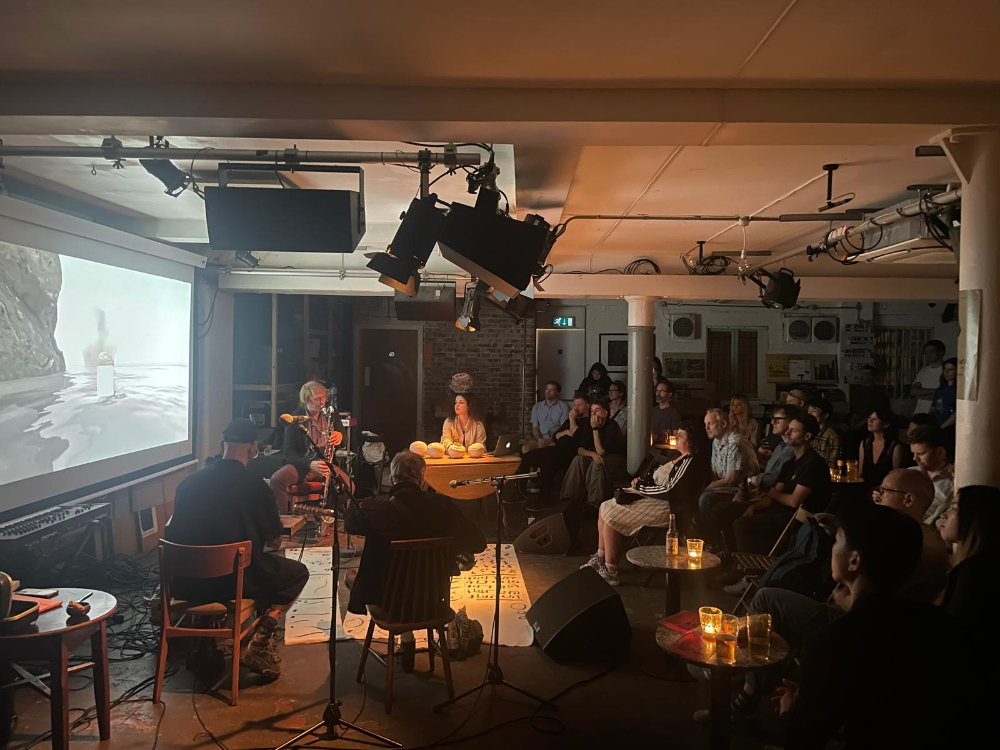

Brain Rot (ongoing project with Adele Lazzeri), Café Oto, 2025. Guests: Chris Cundy, Utopian Realism.
Toby Tobias Kidd is an artist working across installation, performance, music, and moving image, developing collaborative and research-led projects that take place in exhibition, live, and public contexts.